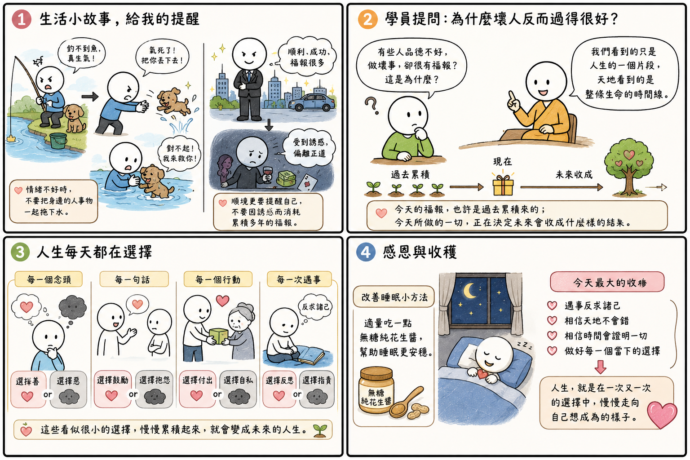

日期：2026/07/05

今天的全球網路共修，導師分享了很多生活中的小故事。每一個故事聽起來都很簡單，但仔細想想，都跟我們平常的生活息息相關，也讓我一路聽、一路反省自己。
其中一個讓我印象最深刻的，就是釣魚的人和小狗的故事。
那位釣魚的人釣了很久都釣不到魚，心情越來越差，一氣之下竟然把陪在身邊的小狗丟進河裡。可是當小狗真的掉進河裡後，他又趕緊跳下去把牠救起來，最後搞得自己全身濕透、狼狽不堪。
聽到這個故事時，我心裡一直在想，生活中很多時候好像也是這樣。當事情不順利、心情不好時，很容易把情緒發洩在身邊最親近的人身上。可是等冷靜下來之後，又開始後悔自己剛剛為什麼要這樣說、這樣做。
導師提醒我們，不要因為自己不好過，就把旁邊的人事物一起拖下水。這句話真的很值得時時提醒自己。
另一個故事也讓我很有感觸。導師分享，有些人在人生很順利、事業很成功、也累積了很多福報之後，反而開始受到外在的誘惑，最後做出偏離正道的事情，把原本累積多年的福報慢慢消耗掉。
以前總覺得逆境最難熬，但今天聽完後，我反而覺得，順境有時候比逆境更需要提醒自己。因為當一切都很順利時，人反而容易鬆懈，也比較容易忘記初心。所以，不管未來遇到順境還是逆境，我都希望自己能一直提醒自己，不要因為一時的誘惑，而偏離原本想走的方向。
今天學員提問的問題，我相信也是很多人心中的疑問。
為什麼有些人品德不好，甚至做了很多壞事，卻還是過得很好、很有福報？
導師說今天整堂共修課就己經回答完這個問題，因為我們看到的，只是人生的一個片段，而天地看到的是整條生命的時間線。今天的福報，也許是過去累積來的；今天所做的一切，也正在決定未來會收成什麼樣的結果。
人生每天都在做選擇，不是等到遇到大事才做決定，而是每一個念頭、每一句話、每一個行動，其實都在選邊站。是選擇善？還是選擇惡？是選擇抱怨？還是選擇反求諸己？這些看似很小的選擇，慢慢累積起來，就會變成未來的人生。
另外，我也很感恩導師今天分享了一個改善睡眠的小方法。現在很多人都有睡眠品質不好的困擾，導師很貼心地分享，可以適量吃一點無糖純花生醬，幫助睡眠更安穩。除了分享人生的智慧，也關心大家的身體健康，真的讓人覺得很溫暖。
今天這堂共修，我最大的收穫就是提醒自己，遇到事情不要急著看別人，而是先反求諸己；不要只看眼前，而是相信天地不會錯，也相信時間終究會證明一切。最重要的是，把每一天、每一個當下的選擇做好，因為人生，其實就是在一次又一次的選擇中，慢慢走向自己想成為的樣子。